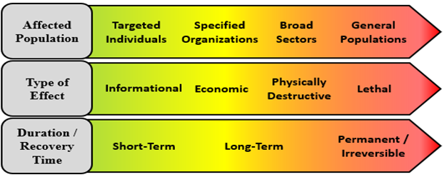

Part 5 - Planning and Deployment
Challenge 1 - Offensive Security Challenge: Preventing Collateral Damage During Offensive Attacks (Megan and Jordan)
When conducting Offensive Security operations, countries raise the risk of causing collateral damage on innocent citizens and civilians. For example, a cyber attack aiming to target a government building's power supply may impact nearby buildings and homes.
There are different levels of collateral damage. They range from very minimal impact to catastrophic, irreversible civilization changes, as shown in the graphic below.

(Pendino, Jahn, & Pedersen, 2022)
Offensive security operations must aim to stay on the green end of the collateral damage spectrum shown above. Lebanon can do this by following a few simple guidelines, shown below:
- Before the action, clearly identify a scope of action and limit the scope to avoid impacting citizens.
- During the action, monitor the area and pull back operations if innocent citizens are being impacted.
- After the action, help care for any impacted innocent civilians. Do not raid them or take advantage of them, rather help them get back onto their feet.
Challenge 2 - Cyber Challenge: Outsourced and Outdated Infrastructure (Dane D)
One of Lebanon's challeges is that they use imported and outdated equiupment from other countries. (Addressing Cybersecurity Challenges in Lebanon, n.d.), (Lebanon Military Profile, n.d.)
Lebanon relies heavily on imported technology, much of which is outdated or vulnerable to exploitation. This technological dependence leaves critical infrastructure exposed to attacks from adversaries with superior capabilities. Additionally:
Lebanon lacks indigenous research and development (R&D) in cybersecurity.
Its infrastructure is ill-equipped to handle sophisticated cyber operations.
Impact on Cyberwarfare Planning:
Outdated and vulnerable systems make it easier for adversaries to infiltrate Lebanese networks, steal data, and disrupt operations, undermining the country's ability to conduct effective cyberwarfare.
Plan to Address Cyber Challenge:
Prior to Cyber Action:
Audit all critical systems to identify vulnerabilities in outdated infrastructure and prioritize their upgrading.
Promote local R&D initiatives by incentivizing universities and tech firms to develop indigenous cybersecurity solutions.
Establish partnerships with international allies to acquire advanced technologies and training.
Create a layered defense strategy using redundant systems to minimize reliance on any single technology.
During Cyber Action:
Monitor and rapidly patch vulnerabilities exploited by adversaries in real-time.
Use deception tactics (honeypots or false systems) to confuse attackers and protect critical systems.
Leverage adaptive strategies, rerouting operations to secondary systems when necessary.
After Cyber Action:
Conduct a thorough forensic analysis to identify technology-related gaps that were exploited.
Use insights gained to prioritize future technological investments.
Develop post-action reports to share lessons with local R&D initiatives and international partners.
Challenge 3 - Limited Offensive Cyber Capabilities (Tyler-Trenten K.)
Challenge Overview
Lebanon lacks robust offensive cyber capabilities due to resource constraints, limited expertise, and reliance on international support. This limits its ability to deter, retaliate, or project power in the cyber domain, leaving the nation vulnerable to adversaries and reducing its geopolitical influence.
Key Challenges to Offensive Cyber Operations
- Resource Constraints: Economic struggles hinder investment in offensive cybersecurity tools and training.
- Talent Shortage: A brain drain of skilled professionals limits the local workforce capable of building advanced tools.
- Dependence on External Support: Reliance on international partners restricts Lebanon’s operational autonomy.
- Ethical and Legal Concerns: Offensive operations must avoid civilian harm and comply with international law.
Relevance to Geopolitics and National Security
- Weak Deterrence: Limited offensive capacity encourages aggressors to target Lebanon.
- Increased Vulnerability: Lebanon is susceptible to coercion without the means to retaliate.
- Diminished Influence: The lack of cyber capabilities reduces Lebanon’s regional impact.
Recommendations for Senior Leadership
- Invest in Local Development: Build indigenous tools and train cybersecurity experts.
- Enhance Partnerships: Leverage international support for short-term capability building.
- Establish Ethical Guidelines: Create protocols for lawful and ethical offensive operations.
- Collaborate with Private Sector: Work with tech firms and universities to innovate and enhance cyber capabilities.
These steps can help Lebanon strengthen its offensive cyber capabilities and enhance its cybersecurity posture.
Psychological Challenge: Exploitation of Lebanon's Financial Systems(Dane L)
Attack Overview
Enemy nation-state hackers can exploit vulnerabilities in Lebanon's financial systems to destabilize the economy, lower trust in the government, and create psychological distress among the population. This psychological warfare technique targets banking systems, payment infrastructure, and digital financial services, exacerbating economic challenges.
Plan to Address Cyber Challenge:
Prior to Cyber Action:
- Conduct regular cybersecurity audits of banks and financial systems in Lebanon.
- Deploy advanced intrusion detection systems to identify and mitigate malicious activities.
- Provide cybersecurity training to financial employees, managers, and stakeholders to reduce social engineering risks.
- Educate the public about cyber threats, such as phishing and fraud, while showcasing the government's preventative measures.
- Implement national regulations requiring financial institutions to adhere to strict cybersecurity standards.
During Cyber Action:
- Activate backup servers and redundancy systems to ensure continuity of financial services.
- Communicate clearly and transparently with the public about the situation and efforts to resolve it.
- Deploy crisis communication experts to manage public concerns and maintain trust in the financial system.
After Cyber Action:
- Conduct a forensic analysis to determine the attack's origin and exploited vulnerabilities.
- Update security policies and introduce additional safeguards based on findings from the incident.
- Deliver a transparent report to rebuild public trust and demonstrate resilience in Lebanon's financial systems.